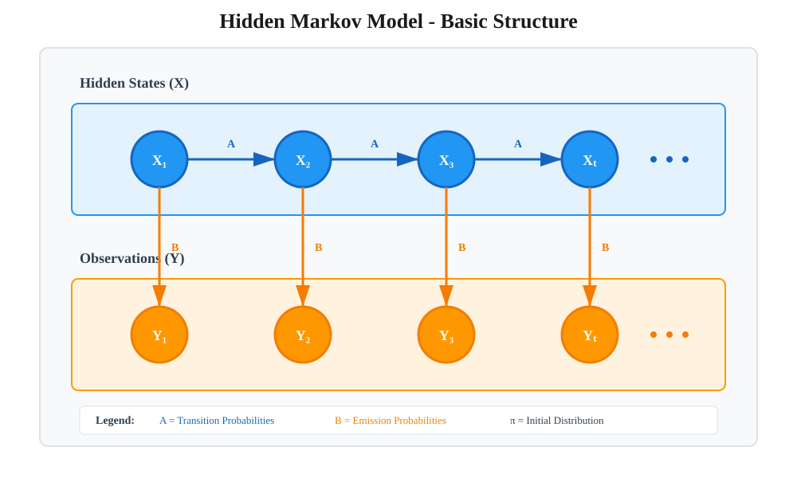
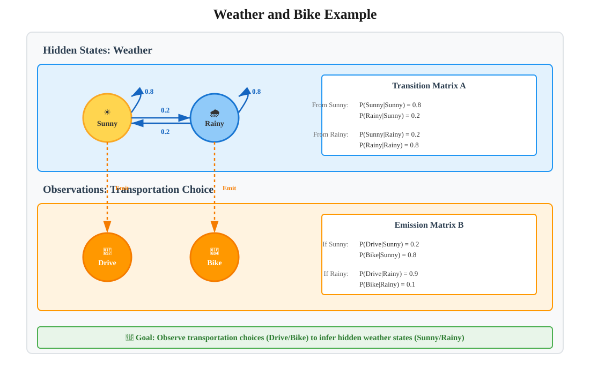
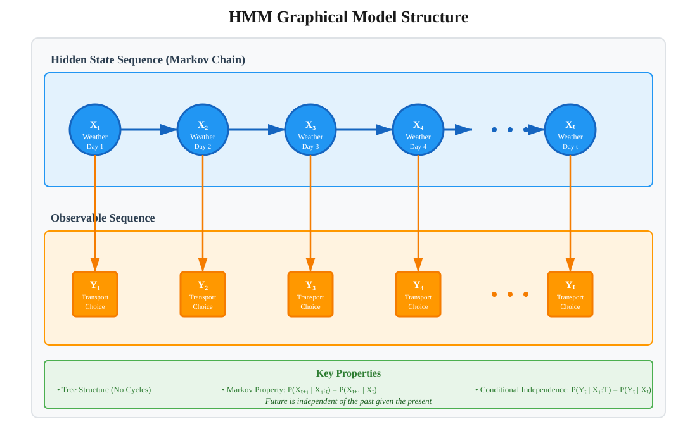
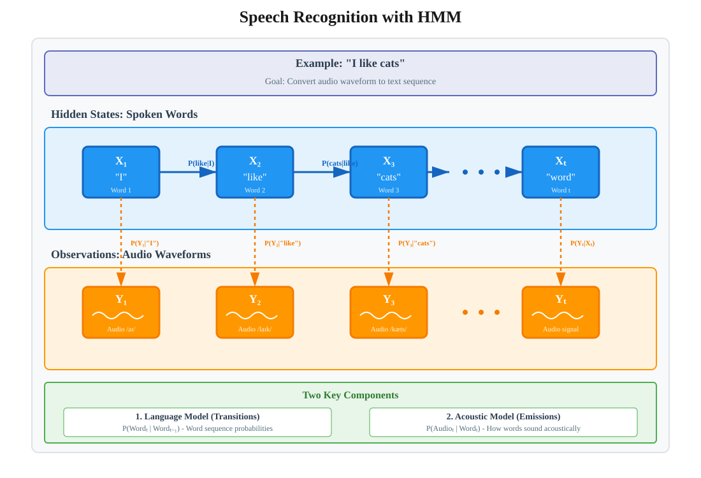
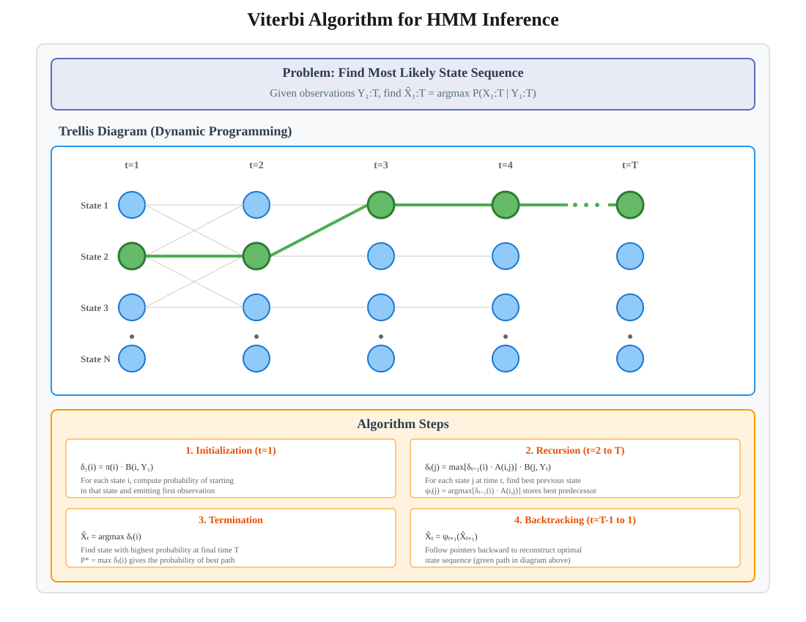

Hidden Markov Models (HMM)
📑 Quick Navigation
- Introduction
- Core Concepts
- Mathematical Foundation
- Weather and Bike Example
- Graphical Model Structure
- Applications
- Speech Recognition
- Parameter Learning
- Inference with Viterbi Algorithm
- Additional Applications
- Implementation Examples
- References & Further Reading
🎯 Introduction
Hidden Markov Models (HMMs) are powerful probabilistic models used to explain the characteristics of random processes where the system state is not directly observable. Instead of observing the actual state, we only see noisy observations that depend on the hidden state.
Key Principle:
An observed event does not directly correspond to the system's actual state but is related through a set of probability distributions. The system evolves according to a Markov chain, but the states themselves remain hidden from direct observation.

Historical Significance:
HMMs have been fundamentally important in numerous fields for decades:
- Speech Recognition: Core technology in voice assistants
- Natural Language Processing: Text analysis and generation
- Bioinformatics: Genomic sequence analysis
- Music Processing: Audio signal analysis
- Time Series Analysis: Temporal pattern recognition
🔑 Core Concepts
Markov Process:
A stochastic process where the future state depends only on the current state, not on the sequence of states that preceded it (memoryless property).
Hidden States:
The true underlying states of the system that we cannot directly observe. These states evolve according to a Markov chain.
Observations:
The noisy, indirect measurements we can actually see. Each observation depends on the current hidden state.
Key Components:
- State Space (X): The set of all possible hidden states
- Observation Space (Y): The set of all possible observations
- Transition Probabilities: Probabilities of moving between hidden states
- Emission Probabilities: Probabilities of generating observations from states
- Initial State Distribution: Starting probabilities for each state
Fundamental Assumption:
The HMM makes a critical assumption: for each time step, the probability distribution of observations Y does not depend on the history of the hidden process X, only on the current state.
📐 Mathematical Foundation
HMM Components:
An HMM is characterized by the tuple λ = (A, B, π):
λ = (A, B, π)
Where:
- A = Transition Matrix: P(Xₜ = j | Xₜ₋₁ = i)
- B = Emission Matrix: P(Yₜ = k | Xₜ = j)
- π = Initial Distribution: P(X₁ = i)
Markov Property:
P(Xₜ | X₁, X₂, ..., Xₜ₋₁) = P(Xₜ | Xₜ₋₁)
Observation Independence:
P(Yₜ | X₁, X₂, ..., Xₜ, Y₁, Y₂, ..., Yₜ₋₁) = P(Yₜ | Xₜ)
Joint Probability:
The joint probability of a sequence of states and observations is:
P(X₁:T, Y₁:T) = π(X₁) · ∏ᵀₜ₌₂ A(Xₜ₋₁, Xₜ) · ∏ᵀₜ₌₁ B(Xₜ, Yₜ)
Three Fundamental Problems:
- Evaluation Problem: Given model λ and observations Y, compute P(Y|λ)
- Decoding Problem: Given model λ and observations Y, find the most likely state sequence X
- Learning Problem: Given observations Y, estimate the model parameters λ
🌤️ Weather and Bike Example
Scenario:
A person commutes to work daily and chooses between driving a car or riding a bike. This choice is influenced by the weather, which is either sunny or rainy. We have parking garage data showing when the person parked their car, and we want to infer the weather for each day.

Hidden States (Weather):
- Xₜ: Weather on day t (Sunny or Rainy)
Observations (Transportation):
- Yₜ: Whether the person drove or biked on day t
Transition Probabilities:
The weather evolves as a Markov chain:
- P(Sunny tomorrow | Sunny today) = 0.8
- P(Rainy tomorrow | Sunny today) = 0.2
- P(Rainy tomorrow | Rainy today) = 0.8
- P(Sunny tomorrow | Rainy today) = 0.2
Interpretation:
The weather tends to stay the same with probability 0.8 and switches with probability 0.2.
Emission Probabilities (Example):
- P(Drive | Sunny) = 0.2 (less likely to drive on sunny days)
- P(Bike | Sunny) = 0.8 (more likely to bike on sunny days)
- P(Drive | Rainy) = 0.9 (more likely to drive on rainy days)
- P(Bike | Rainy) = 0.1 (less likely to bike on rainy days)
Goal:
Given the sequence of observations (drove or biked each day), infer the most likely sequence of weather states.
🔗 Graphical Model Structure
HMM as a Graphical Model:
The structure of an HMM can be represented as a directed graphical model where:
- Nodes represent random variables (states and observations)
- Edges represent conditional dependencies
- The graph forms a tree structure (no cycles)

Key Properties:
Chain Structure:
- Horizontal edges: Connect hidden states (X₁ → X₂ → X₃ → ...)
- Vertical edges: Connect hidden states to observations (Xₜ → Yₜ)
Global Markov Property:
Conditional on any node Xₜ, the future states are independent of the past states:
P(Xₜ₊₁:T | X₁:ₜ) = P(Xₜ₊₁:T | Xₜ)
Local Markov Property:
Each observation Yₜ depends only on the current state Xₜ:
P(Yₜ | X₁:T, Y₁:ₜ₋₁) = P(Yₜ | Xₜ)
Tree Graph:
The HMM structure is a tree graph because there are no cycles. This property enables efficient inference algorithms.
Statistical Relationships:
Edges in this graphical model indicate statistical relationships, not physical interactions. For example, the edge from Xₜ (weather) to Yₜ (transportation choice) represents the fact that transportation choice depends on weather.
🎯 Applications
1. Speech Recognition 🎤
Transform audio waveforms into text by modeling the sequence of words.
2. Part-of-Speech Tagging 📝
Identify grammatical categories of words in sentences.
3. Bioinformatics 🧬
Analyze genomic sequences for gene finding and protein structure prediction.
4. Financial Modeling 💹
Predict market regimes and trading signals from price observations.
5. Gesture Recognition 👋
Interpret human movements from sensor data.
6. Inventory Management 📦
Track product quantities despite incomplete sales data.
Common Characteristics:
- Sequential data: Observations occur over time
- Hidden structure: True state is not directly observable
- Noisy observations: Measurements contain uncertainty
- Temporal dependencies: Current state influences future states
🎙️ Speech Recognition
Language Model Foundation:
In basic language modeling, each word in a sentence depends only on the preceding word, forming a Markov chain:
P(Word₁, Word₂, ..., WordT) = ∏ᵀₜ₌₁ P(Wordₜ | Wordₜ₋₁)

HMM Components for Speech:
Hidden States (X):
- X₁, X₂, X₃, ...: Sequence of words being spoken
- Example: X₁ = "I", X₂ = "like", X₃ = "cats"
Observations (Y):
- Y₁, Y₂, Y₃, ...: Audio waveforms captured by microphone
- The computer hears sounds, not words
Transition Probabilities:
Model the probability of word sequences:
P(Xₜ = wₜ | Xₜ₋₁ = wₜ₋₁)
Example:
- P("cats" | "like") might be high
- P("programming" | "like") might be high
- P("the" | "like") might be moderate
Emission Probabilities:
Model how each word sounds:
P(Yₜ | Xₜ = "cats")
This is the noisy observation model describing the acoustic properties of each word.
Model Parameters:
The HMM for speech recognition is specified by:
- Markov transition probabilities between words (learned from text corpora)
- Observation model (how each word sounds acoustically)
Recognition Process:
Given audio observations Y₁:T, find the most likely word sequence X₁:T:
X̂₁:T = argmax P(X₁:T | Y₁:T)
📊 Parameter Learning
The Learning Problem:
How do we learn the parameters (A, B, π) of an HMM from data?
Supervised Learning:
When both hidden states and observations are available:
- Count transitions: Estimate A from state transition frequencies
- Count emissions: Estimate B from state-observation pairs
- Maximum Likelihood Estimation: Direct computation from counts
Example for Language Models:
P(Wordₜ = "cats" | Wordₜ₋₁ = "like") = Count("like cats") / Count("like")
Use large text corpora to compute word transition frequencies.
Unsupervised Learning:
When only observations are available (most common in practice):
Baum-Welch Algorithm:
- An instance of the Expectation-Maximization (EM) algorithm
- Iteratively improves parameter estimates
- Guaranteed to increase likelihood (converges to local optimum)
Algorithm Steps:
- Initialize: Set initial parameter values λ⁽⁰⁾
- E-Step (Expectation): Compute expected state occupancies given current parameters
- M-Step (Maximization): Update parameters to maximize expected log-likelihood
- Iterate: Repeat E and M steps until convergence
Forward-Backward Algorithm:
Used within the E-step to compute probabilities:
- Forward variables (α): P(Y₁:ₜ, Xₜ = i | λ)
- Backward variables (β): P(Yₜ₊₁:T | Xₜ = i, λ)
Convergence:
The algorithm is guaranteed to increase the likelihood at each iteration, but may converge to a local maximum rather than the global maximum.
🔍 Inference with Viterbi Algorithm
The Decoding Problem:
Given a known model λ and observations Y₁:T, find the most likely sequence of hidden states X₁:T.

Objective:
X̂₁:T = argmax P(X₁:T | Y₁:T)
X₁:T
Bayes Rule Application:
P(X | Y) = P(Y | X) P(X) / P(Y)
Since P(Y) is constant with respect to X:
argmax P(X | Y) = argmax P(Y | X) P(X)
X X
Viterbi Algorithm:
A dynamic programming algorithm that efficiently finds the optimal state sequence.
Key Idea:
- Use message passing on the tree graphical model
- Build solution incrementally from left to right
- Store the best path to each state at each time step
Algorithm Steps:
-
Initialization (t=1):
δ₁(i) = π(i) · B(i, Y₁) ψ₁(i) = 0 -
Recursion (t=2 to T):
δₜ(j) = max[δₜ₋₁(i) · A(i,j)] · B(j, Yₜ) i ψₜ(j) = argmax[δₜ₋₁(i) · A(i,j)] i -
Termination:
P* = max δT(i) i X̂T = argmax δT(i) i -
Backtracking (t=T-1 to 1):
X̂ₜ = ψₜ₊₁(X̂ₜ₊₁)
Complexity:
- Time Complexity: O(T · N²) where T is sequence length, N is number of states
- Space Complexity: O(T · N)
Advantages:
- Optimal: Finds the globally best state sequence
- Efficient: Much faster than enumerating all possible sequences (N^T)
- Practical: Enables real-time speech recognition and other applications
🔧 Additional Applications
1. Inventory Management 📦
Scenario:
A grocery store wants to track the number of items on shelves, but only has access to point-of-sale and restocking data due to loss or theft.
HMM Components:
- Hidden States: Actual quantity of product on shelf
- Observations: Purchase data and restocking events
- Transition Model: Inventory evolves as a Markov chain
Application:
The store uses an HMM to estimate the true inventory level despite incomplete information.
2. Part-of-Speech Tagging 🏷️
Problem:
Many words can have multiple parts of speech with different meanings:
- "bear" (noun): Grizzly bear lives in the forest
- "bear" (verb): I can only bear listening to punk rock for five minutes
HMM Components:
- Hidden States: Part of speech (noun, verb, adjective, preposition, etc.)
- Observations: The words themselves
- Transition Model: Sentence structure patterns
Markov Model for Syntax:
P(POSₜ | POSₜ₋₁)
Examples:
- If last word was a noun, what's the likelihood the current word is a verb?
- If last word was an article, the next word is likely a noun or adjective
Importance:
Part-of-speech tagging is a critical first step in semantic understanding and natural language processing.
3. Bioinformatics Applications 🧬
Gene Finding:
- Hidden States: Genomic regions (exon, intron, intergenic)
- Observations: DNA sequence (A, C, G, T)
Protein Structure Prediction:
- Hidden States: Secondary structure (helix, sheet, coil)
- Observations: Amino acid sequence
CpG Island Detection:
- Hidden States: CpG island vs non-island
- Observations: Dinucleotide frequencies
💻 Implementation Examples
Python Implementation with hmmlearn

Installation:
pip install hmmlearn numpy scipy
Example: Weather Prediction
import numpy as np
from hmmlearn import hmm
# Define model parameters
n_states = 2 # Sunny, Rainy
n_observations = 2 # Drive, Bike
# Initialize HMM
model = hmm.MultinomialHMM(n_components=n_states, n_iter=100)
# Transition probabilities
model.transmat_ = np.array([
[0.8, 0.2], # From Sunny
[0.2, 0.8] # From Rainy
])
# Emission probabilities
model.emissionprob_ = np.array([
[0.2, 0.8], # Sunny: [Drive, Bike]
[0.9, 0.1] # Rainy: [Drive, Bike]
])
# Initial state distribution
model.startprob_ = np.array([0.5, 0.5])
# Observations (0=Drive, 1=Bike)
observations = np.array([[0], [0], [1], [1], [0], [1], [1]]).T
# Predict hidden states (Viterbi algorithm)
logprob, states = model.decode(observations.T, algorithm="viterbi")
print("Most likely weather sequence:")
weather_map = {0: "Sunny", 1: "Rainy"}
for i, state in enumerate(states):
print(f"Day {i+1}: {weather_map[state]}")
Example: Training from Data
# Generate synthetic training data
np.random.seed(42)
# Create training sequences
X_train = np.array([
[0, 0, 1, 1, 0],
[1, 1, 0, 0, 0],
[0, 1, 1, 0, 1]
]).reshape(-1, 1)
lengths = [5, 5, 5] # Sequence lengths
# Train the model
model_trained = hmm.MultinomialHMM(n_components=2, n_iter=100)
model_trained.fit(X_train, lengths)
print("Learned transition matrix:")
print(model_trained.transmat_)
print("\nLearned emission probabilities:")
print(model_trained.emissionprob_)
PyTorch Implementation
import torch
import torch.nn as nn
class HMM(nn.Module):
def __init__(self, n_states, n_observations):
super(HMM, self).__init__()
self.n_states = n_states
self.n_observations = n_observations
# Learnable parameters
self.transition = nn.Parameter(torch.randn(n_states, n_states))
self.emission = nn.Parameter(torch.randn(n_states, n_observations))
self.initial = nn.Parameter(torch.randn(n_states))
def forward_algorithm(self, observations):
"""Compute forward probabilities"""
T = observations.shape[0]
alpha = torch.zeros(T, self.n_states)
# Initialization
alpha[0] = torch.softmax(self.initial, dim=0) * \
torch.softmax(self.emission, dim=1)[:, observations[0]]
# Recursion
trans_prob = torch.softmax(self.transition, dim=1)
emis_prob = torch.softmax(self.emission, dim=1)
for t in range(1, T):
alpha[t] = torch.matmul(alpha[t-1], trans_prob) * \
emis_prob[:, observations[t]]
return alpha
def viterbi_decode(self, observations):
"""Find most likely state sequence"""
T = observations.shape[0]
delta = torch.zeros(T, self.n_states)
psi = torch.zeros(T, self.n_states, dtype=torch.long)
# Initialization
delta[0] = torch.softmax(self.initial, dim=0) * \
torch.softmax(self.emission, dim=1)[:, observations[0]]
# Recursion
trans_prob = torch.softmax(self.transition, dim=1)
emis_prob = torch.softmax(self.emission, dim=1)
for t in range(1, T):
for j in range(self.n_states):
probs = delta[t-1] * trans_prob[:, j]
delta[t, j] = torch.max(probs) * emis_prob[j, observations[t]]
psi[t, j] = torch.argmax(probs)
# Backtracking
states = torch.zeros(T, dtype=torch.long)
states[T-1] = torch.argmax(delta[T-1])
for t in range(T-2, -1, -1):
states[t] = psi[t+1, states[t+1]]
return states
# Usage
model = HMM(n_states=2, n_observations=2)
observations = torch.tensor([0, 0, 1, 1, 0, 1, 1])
predicted_states = model.viterbi_decode(observations)
print("Predicted states:", predicted_states)
Hugging Face Resources
Pre-trained Models:
Datasets:
- Common Voice - Speech data
- Penn Treebank - POS tagged text
📚 References & Further Reading
Foundational Papers:
-
Baum, L. E., & Petrie, T. (1966). "Statistical Inference for Probabilistic Functions of Finite State Markov Chains." Annals of Mathematical Statistics. [Classic HMM paper]
-
Rabiner, L. R. (1989). "A Tutorial on Hidden Markov Models and Selected Applications in Speech Recognition." Proceedings of the IEEE, 77(2), 257-286. 📄 Seminal tutorial paper
-
Durbin, R., et al. (1998). "Biological Sequence Analysis: Probabilistic Models of Proteins and Nucleic Acids." Cambridge University Press. [Bioinformatics applications]
ArXiv Resources:
-
Blunsom, P. (2004). "Hidden Markov Models." arXiv:1401.0083 - Comprehensive tutorial
-
Ghahramani, Z. (2001). "An Introduction to Hidden Markov Models and Bayesian Networks." [Technical report with graphical models perspective]
Modern Applications:
- Graves, A., et al. (2013). "Speech Recognition with Deep Recurrent Neural Networks." ICASSP. [Modern deep learning approach]
Software & Tools:
-
hmmlearn Documentation: https://hmmlearn.readthedocs.io/ - Python library for HMMs
-
Pomegranate: https://pomegranate.readthedocs.io/ - Fast, flexible probabilistic modeling
Online Courses:
- Stanford CS229: Machine Learning (HMM lectures)
- Coursera: Probabilistic Graphical Models Specialization
- MIT 6.867: Machine Learning (Sequence Models)
Additional Reading:
- Bishop, C. M. (2006). Pattern Recognition and Machine Learning. Chapter 13: Sequential Data.
- Murphy, K. P. (2012). Machine Learning: A Probabilistic Perspective. Chapter 17: Markov and Hidden Markov Models.
Document Information:
- Created: 2025-10-09
- Topic: Hidden Markov Models
- Target Audience: AI/ML Engineers, Researchers, Students
- Prerequisites: Probability theory, Basic machine learning
- Difficulty: Intermediate to Advanced
This documentation is optimized for MkDocs with Material theme. For best results, ensure all SVG diagrams are placed in the ../../../svg/ directory relative to this markdown file.